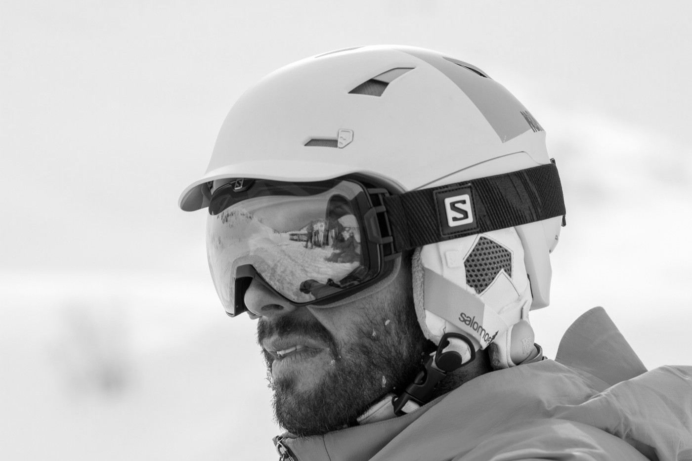

Developers, Consultants and Teachers
C++, Python, Web, QGIS, QField, PostGIS, Android, Ili2DB, ...
MARIO BARANZINI
- QGIS Plugins, PostGIS, ili2db
MATTHIAS KUHN
- QGIS core committer, QField, QGIS Plugins, PostGIS

Marco Bernasocchi
MSc in GIS @ UNIZH
Developer, Consultant, Teacher & foremost Tinkerer
Skier, Climber, Diver
@mbernasocchi
marco@opengis.ch
opengisch.github.io/talks/about-us
We
l[i|o]ve
open source.
Reuse and edit this presentation on
github
Please
do
ask questions
Now let's get started
 MARIO BARANZINI
MARIO BARANZINI